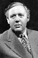

Country:United States, 197 minutes
Spoken languages:
Genres:History, War, Drama, Adventure
Director(s):Stanley Kubrick, Anthony Mann
Writer(s):Dalton Trumbo, Peter Ustinov, Howard Fast, Plutarch
Video Codec:Unknown
Number: 1417


Certification:PG-13
Storyline:
The rebellious Thracian Spartacus, born and raised a slave, is sold to Gladiator trainer Batiatus. After weeks of being trained to kill for the arena, Spartacus turns on his owners and leads the other slaves in rebellion. As the rebels move from town to town, their numbers swell as escaped slaves join their ranks. Under the leadership of Spartacus, they make their way to southern Italy, where they will cross the sea and return to their homes.
Cast: 


Medium: Original DVD,
Loaned: No
Aspect ratio: Unknown